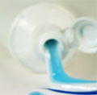

General Dentistry & Hygiene

During your initial visit to Sachem Dental Group a comprehensive dental exam will be performed. At this time and during periodic check-up examinations our dentists & hygienists will do all of the following:
- Review Medical History - Doctors will go over any health issues that are relevant to your dental care.
- Examination of x-rays (radiograph) - Panoramic, periapical and bitewings will be taken. These are important for detection of dental decay, tumors, cysts and bone loss.
- Gum Disease Evaluation - Our professionals will evaluate your radiographs and check the gums and bone around your teeth. This will help us decide if there are any signs of Periodontal Disease and whether or not you need to be referred to a Periodontist.
- Oral Cancer Screening - During your dental exam we will check your face, neck, lips, tongue & tissues for any signs or oral cancer.
- Exam of Existing Dental Work - We will evaluate the integrity of any previous or existing dental work. Old or failing dental work can frequently be the cause of oral problems in the future.
- Detection of Tooth Decay - We will examine our patients clinically and radiographically to determine whether or not they have tooth decay.
- Dental Radiographs - Dental x-rays are essential preventative & diagnostic tools used during your dental exam. A clinical oral exam cannot be complete without x-rays. Radiographs frequently reveal problems that would otherwise go undetected during a routine visual dental examination.
How often should dental x-rays be taken?
A full series of dental x-rays is recommended for all new patients. Bitewing x-rays (taken when top & bottom teeth are closed together) are taken during check up visits and are recommended once or twice a year.
Safety of Dental x-rays
Dental x-rays produce a very low level of radiation and are considered safe. We at Sachem Dental Group take necessary precautions to limit the patient's exposure to radiation. These precautions include using lead apron shields to protect the body & using modern fast film that reduces the exposure time of each x-ray.
Professional Dental Cleaning (Hygiene Exam)
At Sachem Dental Group dental cleaning (prophylaxis) is performed by registered dental hygienists. Your hygiene appointment will include a dental exam and the following:
- Removal of Calculus (Tartar) - Calculus is hardened plaque that has been on the tooth and is now firmly attached to the tooth surface. Calculus may be present above and below the gum line and can only be removed with special dental instruments.
- Removal of Plaque
Plaque is a sticky invisible film that forms on the teeth. Plaque is a growing colony of living bacteria, food debris and saliva. This bacteria produces toxins that inflame the gums and this inflammation can progress to cause periodontal disease.
- Tooth Polishing
This is the final stage of your cleaning visit and will remove stain and plaque that were not otherwise removed during brushing & scaling.